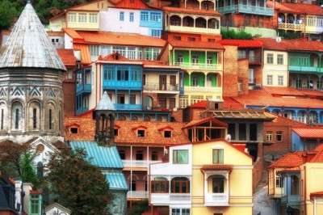

Вершини і закутки Грузії, які неможливо оминути
Якщо для життя – захоплива мандрівка, вирушай до сонячної Грузії, яка своїм теплом та затишком зігріє душу неймовірними спогадами навіть взимку.
Тбілісі, столиця Грузії
Столиця Грузії – місто контрастів. Тбілісі дуже туристичний, лише відійшовши від центру, ти відчуєш всю душевність та щирість міста. Пошарпані вулички та під’їзди, які пахнуть старизною та цвіллю. Багато хто бачить у них просто розвалені будинки, але ж вони мають свій шарм, історію та загадковість. Губитися у типових грузинських двориках, де ще не ступала нога туриста, і робити та мільйон фото – це must!
Казбек, стратовулкан, найсхідніший п’ятитисячник Кавказу
Щоб насолодитися перлиною Кавказу, потрібно лише поїхати у селище Степанцмінда, звідки і розпочинається підйом на сам п’ятитисячник. Дістатися до селища можна із автовокзалу Дідубе в Тбілісі, перша маршрутка о 8 ранку.
Гарною альтернативою замість підкорення Казбеку буде підйом до храму Гергеті. Храм розташований на горі, на висоті 2 000 м, у підніжжя Казбека. Підйом до Гергеті теж розпочинається із селища Степанцмінда. Як і більшість грузинських церков, Гергеті –кам’яна та знаходиться на висоті, що є дуже символічно. Лише істинно віруюча людина зможе подолати цей складний шлях до храму.
До самої церкви Гергеті ми, як справжні мандрівниці, пішли на наших двох, сам підйом зайняв десь 1.5 годин. До того ж, більшу частину часу ми фотографувалися. Зізнаюся чесно, я очікувала набагато крутішого підйому, тому відчувала себе супер. Як виявилося, сам спуск із гори видався навіть важчий, аніж підйом.
Кахетія, винний регіон
Бути в Грузії і не потрапити в Кахетію – це все-одно що не бути в Грузії. Це винний регіон із славнозвісною Алазанською долиною, містечками Цинандалі, Мукузані, Вазусубані, Телаві.
Що варто обов’язково відвідати, так це Сигнахі – місто кохання. Так як воно розташоване на схилі, відкривається приголомшуючий вид на всю Алазанську долину.
А у місті Кварелі знаходиться один з найбільших винзаводів країни – Кіндзмараулі. Тож можна замовити екскурсію і дегустувати найрізноманітніші сорти вина.
м. Местія у регіоні Сванетія
Найвіддаленіший регіон Грузії. І коли туди потрапляєш – відкривається зовсім інша сторона країни. Дуже змішані почуття викликала поїздка до міста Местія, серця регіону. З одного боку – красиві сванські вежі, з іншого – холодні, суворі свани (одна з народностей грузин).
Цікаво, що територія ніколи та ніким не була завойована, адже свани до останньої крові стояли за свою рідну землю. Можливо, звідси витоки їх гарячого, войовничого темпераменту? Кожен зробить свій висновок…
Південь Грузії
Спускаємося на південь Грузії.
• Боржомі. У Боржомі розташований найвідоміший курорт Грузії. Якщо мати трохи часу, можна заїхати в Національний парк і абсолютно безкоштовно скуштувати цілющу воду.
• Ахалцихе. Біля кордону із Вірменією є місто Ахалцихе, відоме фортецею Рабат.
• Вардзія і печерний монастир. Сучасне місто Вардзіа – це невелика частина печерного комплексу зі своїм храмом.
Туристичний центр Батумі
У Грузії навіть найвимогливіший пляжник зможе відчути себе прекрасно! Тяжко уявити, що буквально 5-6 років тому не було ніяких Raddison-ів та Sheraton-ів у центрі міста. Не було набережної з пальмами та натовпом туристів. Зараз кожен може відчути себе частиною туристичної Мекки Грузії.
Що відвідати:
• Скульптура Алі та Ніно.
• Ботанічний сад і пляж Зеленого мису
• МакДональдз (повір, такого ти ще не бачив!).